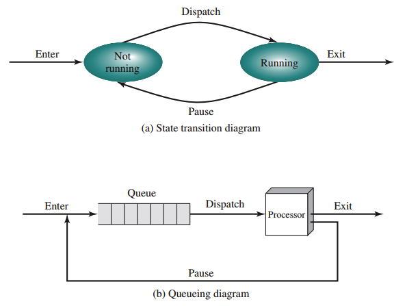
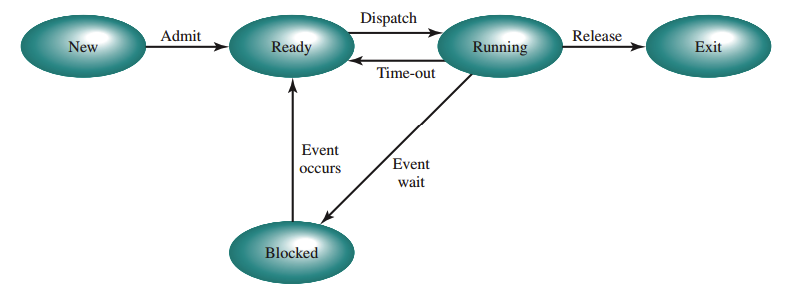
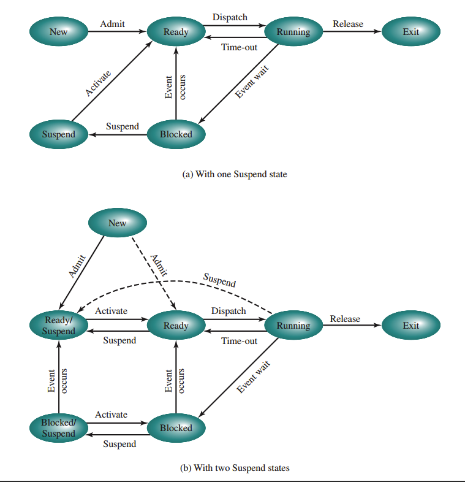

ISC-333 — Unidad I
Tanenbaum & Bos · Modern Operating Systems, Cap. 2
Stallings · Operating Systems, 9ª Ed., Cap. 3
"Conceptualmente, cada proceso tiene su propia CPU virtual. En la realidad, la CPU física alterna entre procesos — esto se denomina multiprogramación."
— Tanenbaum & Bos
| Concepto | Naturaleza | Analogía |
|---|---|---|
| Programa | Entidad estática (código en disco) | La receta de cocina |
| Proceso | Entidad dinámica (programa + estado) | La actividad de cocinar |
En un sistema con una sola CPU, en cualquier instante solo un proceso ejecuta físicamente. La conmutación rápida crea la ilusión de paralelismo — pseudoparalelismo.
| Estado | Descripción |
|---|---|
| Running | Usando la CPU ahora |
| Not Running | Espera su turno en una cola |
Limitación: no distingue entre procesos que esperan E/S (bloqueados, no pueden ejecutar) y procesos listos (pueden ejecutar). Esto lleva al modelo de cinco estados.

| Estado | Descripción |
|---|---|
| New | Recién creado; aún no listo |
| Ready | Listo; esperando CPU |
| Running | Ejecutando en CPU |
| Blocked | Esperando E/S o evento |
| Exit | Terminado o abortado |

Problema: si todos los procesos están bloqueados, la CPU queda ociosa.
Solución — Swapping: mover procesos al disco para liberar memoria.
| Estado | Descripción |
|---|---|
| Ready/Suspend | En disco, listo para ejecutar |
| Blocked/Suspend | En disco y esperando evento |

Para gestionar recursos, el SO mantiene cuatro categorías de tablas:
| Tabla | Contenido |
|---|---|
| Memory | Asignación de memoria principal/secundaria; protección; memoria virtual |
| I/O | Estado de dispositivos; operaciones E/S en curso |
| File | Existencia y ubicación de archivos; permisos de acceso |
| Process | Una entrada por proceso; apunta a la imagen del proceso |
La imagen del proceso es la colección completa de información que define a un proceso:
| Elemento | Descripción |
|---|---|
| User Program | El código ejecutable del programa |
| User Data | Datos del programa, variables globales, pila de usuario |
| Stack | Pila LIFO para llamadas a procedimientos |
| PCB | Datos que el SO necesita para controlar el proceso |
"El PCB define el estado del SO. Un error en un módulo podría corromper los PCBs de múltiples procesos." — Stallings
| Modo | Privilegio | Quién | Capacidades |
|---|---|---|---|
| Kernel | Alto | Núcleo del SO | Control total: cualquier instrucción y dirección |
| Usuario | Bajo | Programas | Sin instrucciones privilegiadas ni memoria protegida |
El modo se indica con un bit en el PSW.
| Evento | Dirección |
|---|---|
| Llamada al sistema (syscall) | Usuario → Kernel |
| Interrupción / Trap | Usuario → Kernel |
| Retorno de rutina del SO | Kernel → Usuario |
| Evento | Descripción |
|---|---|
| Inicialización del sistema | SO crea procesos y daemons al arrancar |
| Llamada al sistema | Un proceso crea un hijo |
| Petición del usuario | Doble clic o comando en terminal |
| Trabajo batch | SO lanza trabajo de la cola batch |
fork()0execve() para cambiar la imagenCreateProcess()| Tipo | Voluntario | Causa |
|---|---|---|
| Salida normal | Sí | Terminó su trabajo → exit() |
| Salida por error | Sí | Detecta error fatal y se termina |
| Error fatal | No | División por cero, segfault, instrucción ilegal |
| Eliminado | No | Otro proceso ejecuta kill() o TerminateProcess() |
En la mayoría de los sistemas, solo el proceso padre puede matar a sus hijos.
init (PID 1) es la raíz| Mecanismo | Asociado a | Uso típico |
|---|---|---|
| Interrupción | Externa; asíncrona | E/S completa, reloj |
| Trap | Instrucción actual; error | División por cero, acceso inválido |
| Syscall | Solicitud explícita | El proceso pide un servicio al SO |
| Tipo de interrupción | Acción del SO |
|---|---|
| Clock interrupt | Proceso agotó cuanto → Ready; dispatcher asigna otro |
| I/O interrupt | E/S completa → procesos bloqueados pasan a Ready |
| Memory fault | Page fault → bloquea proceso, carga página, luego Ready |
La conmutación tiene un costo real en tiempo de CPU: el tiempo invertido no realiza trabajo útil.
Un thread (hilo) es una unidad de ejecución dentro de un proceso. Comparte memoria y recursos con otros threads del mismo proceso.
| Razón | Explicación |
|---|---|
| Paralelismo | Actividades paralelas en una aplicación |
| Eficiencia | 100× más rápidos de crear que procesos |
| E/S + CPU | Un thread espera E/S; otro sigue con la CPU |
| Multicore | Aprovechan paralelismo real |
Los threads no tienen estado Suspended porque la memoria es compartida — no aplica swapping individual por thread.
El kernel solo ve procesos de un solo thread. Los threads los gestiona una biblioteca.
| Ventajas | Desventajas |
|---|---|
| Conmutación sin syscall (rápido) | Syscall bloqueante bloquea todo el proceso |
| Algoritmo de planificación propio | No libera CPU sin llamar a la biblioteca |
El kernel conoce y gestiona los threads directamente.
| Ventajas | Desventajas |
|---|---|
| Thread bloqueado → kernel planifica otro del mismo proceso | Mayor overhead por syscalls |
| Paralelismo real en multicore |
Híbrido: múltiples threads de usuario por thread de kernel.
UNIX SVR4 define 9 estados de proceso:
| Estado | Descripción |
|---|---|
| User Running | Ejecutando en modo usuario |
| Kernel Running | Ejecutando en modo kernel |
| Ready to Run, in Memory | Listo; en memoria principal |
| Asleep in Memory | Bloqueado; en memoria principal |
| Ready to Run, Swapped | Listo; en disco |
| Sleeping, Swapped | Bloqueado; en disco |
| Preempted | Desalojado al volver de kernel a usuario |
| Created | Recién creado por fork() |
| Zombie | Terminado; espera que el padre lo recoja |
Un proceso en modo kernel NO puede ser desalojado — esto hace a UNIX tradicional inadecuado para tiempo real estricto.
| Concepto | Esencia |
|---|---|
| Proceso | Instancia dinámica: PC, registros, pila y memoria propios |
| Pseudoparalelismo | CPU alterna entre procesos creando ilusión de simultaneidad |
| Estados | New → Ready → Running → Blocked → Exit; +Suspend con swapping |
| PCB | Estructura central del SO: identificación, estado del procesador, control |
| Modos | Kernel (privilegiado) vs. Usuario (restringido); separados por bit del PSW |
| Conmutación | 7 pasos: guardar contexto actual → scheduler → restaurar contexto nuevo |
| Thread | Unidad de ejecución; comparte memoria del proceso; privado: PC, pila |
| fork() | Clon del padre; hijo usa execve() para nueva imagen; copy-on-write |
| Aspecto | Tanenbaum (Cap. 2) | Stallings (Cap. 3) |
|---|---|---|
| Modelo de estados | 3 principales | 5 estados + 2 suspendidos (7 total) |
| PCB | 3 grupos funcionales | 3 categorías: ID, procesador, control |
| Creación UNIX | fork() + execve(); copy-on-write | fork(): 6 pasos detallados |
| Jerarquía | Árbol UNIX; sin jerarquía en Windows | Padre/hijo; proceso 0 y proceso 1 |
| Threads | Cap. 2: ULT, KLT, híbridos | Cap. 4 separado: ULT/KLT/multicore |
| Swapping | No elabora | Detallado: razones, estados suspend |
| UNIX SVR4 | fork()/execve() generales | 9 estados, imagen completa |
ISC-333 — Unidad I: Procesos
← Volver al capítulo completo